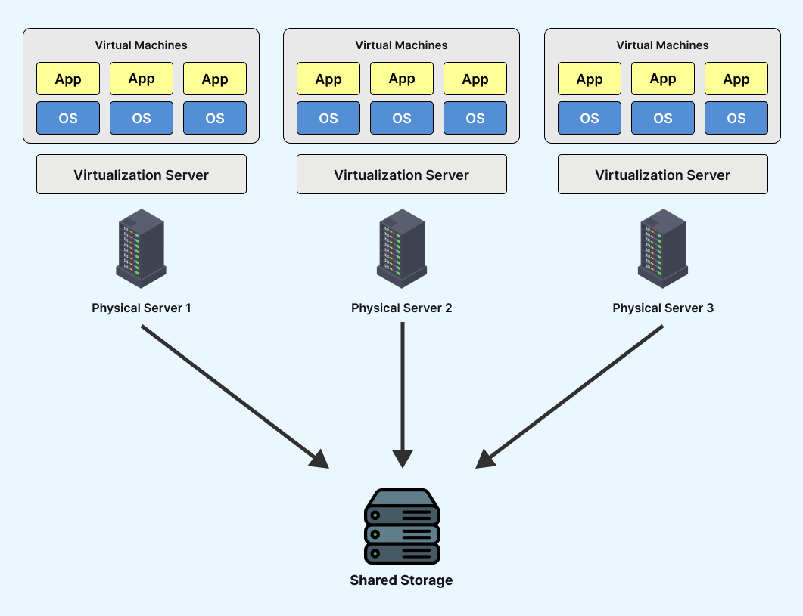

Emulátor
Emulátor je program, který umožňuje běh počítačových programů na jiné platformě (architektuře, operačním systému), než pro kterou byly původně vytvořeny a kterou samy od sebe podporují. Typickým příkladem emulátoru je program umožňující běh videoher známých z herních konzol na běžném PC pod MS Windows nebo Linuxem. Jiným příkladem může být emulátor DOSBox, který emuluje starý operační systém MS DOS v prostředí novějších Windows, případně i na zcela odlišných platformách (Linux).
Virtualizace
Virtualizace označuje v informatice postupy a techniky, které umožňují v počítači přistupovat k dostupným zdrojům jiným způsobem, než jakým fyzicky existují. Virtualizaci je možné realizovat na různých úrovníchod celého počítače (tzv. virtuální stroj), po jeho jednotlivé hardwarové komponenty (např. virtuální procesory, virtuální paměť), až po konkrétní softwarové prostředí (virtualizace operačního systému).
Virtuální stroj
Virtuální stroj je speciální software, který dokáže simulovat skutečný počítač (včetně jeho procesoru, paměti, disku, přídavných karet) a umožňuje instalaci OS i dalších programů. Podmínkou virtualizace je výkonný počítač a potřebný software např. Virtual PC (Microsoft), VirtualBox (Oracle), VMWare apod.
Virtuální stroje se používají z bezpečnostních důvodů pro běh
některých aplikací, aby tyto nemohly ohrozit hostitelský počítač a
jeho operační systém. Často jsou využívány i pro testování nových
aplikací. Velmi přínosná je virtualizace na úrovni serverů tzv.
konsolidace serverů nabízí dokonalejší využití hardware,
oddělený běh síťových aplikací i vyšší bezpečnost dat.